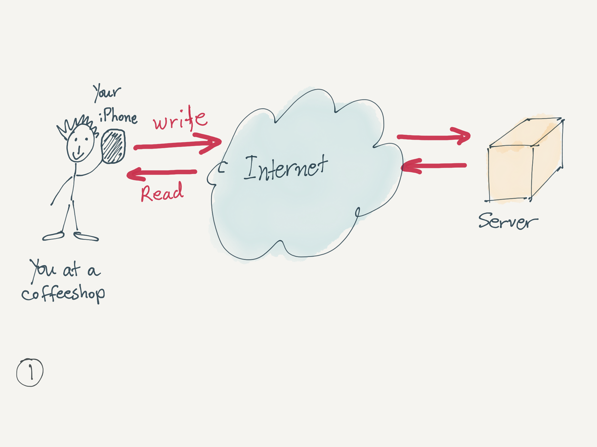
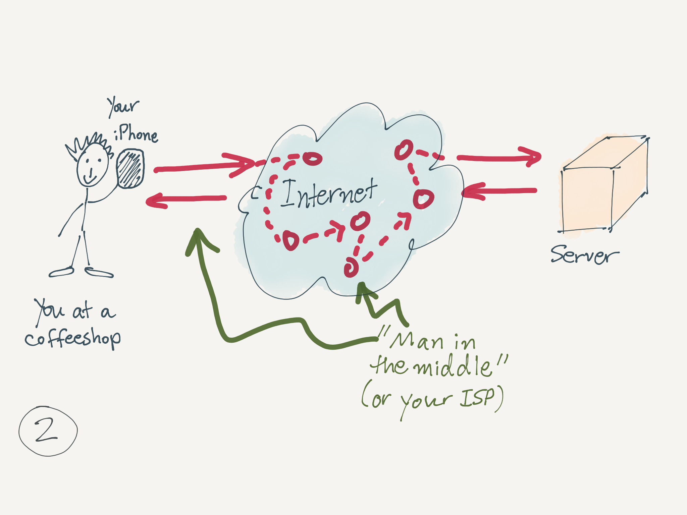
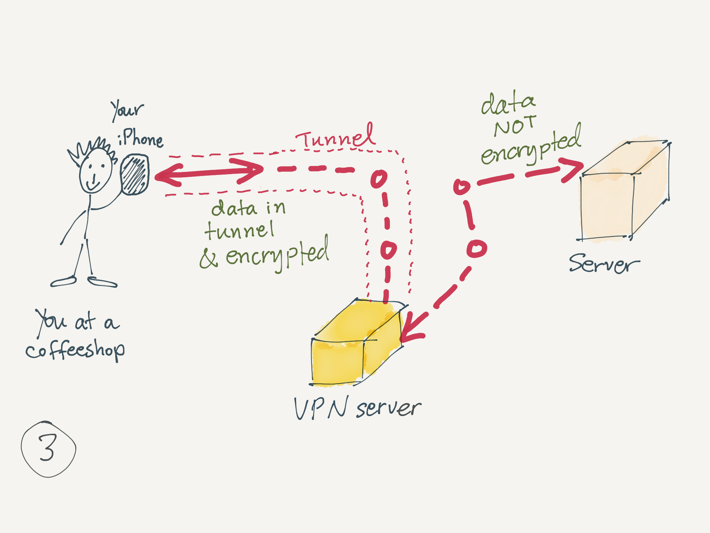
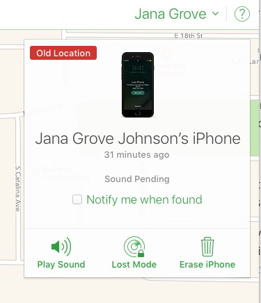
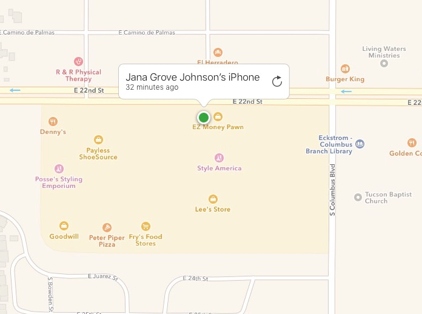
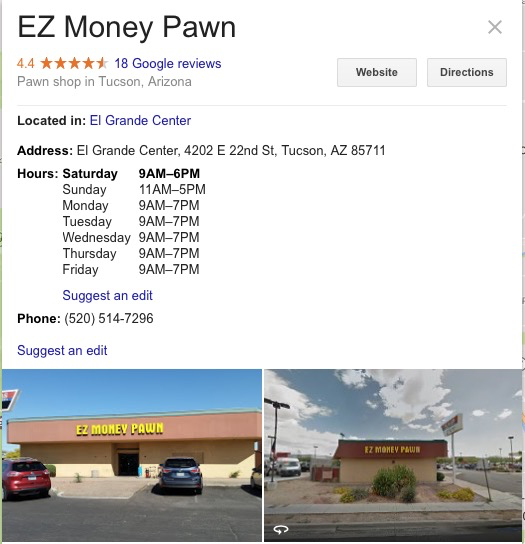
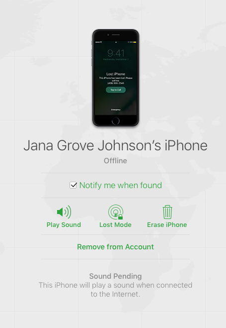
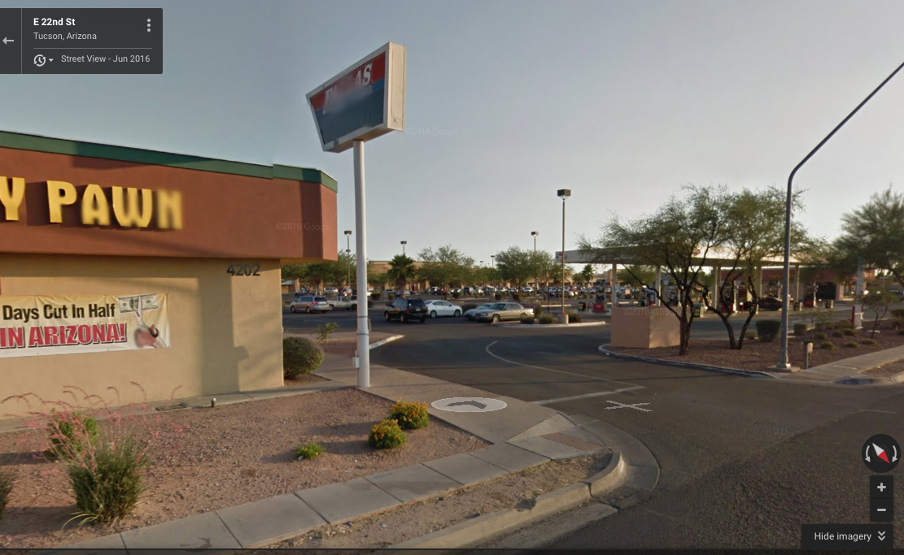

May 2017
PSA
This webpage has various Youtube videos embedded below. In some instances, if you view this page on Safari on iOS, Safari might crash. This is a known issue. Until there is a fix, you can use Puffin for iOS, another free web browser, or clear out your Safari's cache on iOS (this clears out history).
iOS and Apple news
Apple’s AirPods: 98% Customer Satisfaction, reports Techpinions survey. `The overall customer satisfaction level of 98% sets the record for the highest level of satisfaction for a new product from Apple. When the iPhone came out in 2007, it held a 92% customer satisfaction level, iPad in 2010 had 92%, and Apple Watch in 2015 had 97%.'
Boaters say Siri saved their lives. `The fishermen ran into rough seas about four miles off the coast of Key Biscayne Saturday morning,’ WFTX-TV reports. `Police said one of the boaters couldn’t use his phones screen to call 911, so he turned to Siri for help.’ `They had an iPhone 7, which I’m learning today is waterproof. However, he couldn’t touch the screen with his fingers because they were cold, but he used Siri to call 911,’ said Sgt. James Barrett,’ WFTX-TV reports.
Future Apple Watch could treat diabetes, reports Macworld. `A new report claims Apple has a secret team of biomedical engineers working on helping diabetes patients with non-invasive, continuous glucose monitoring.’
FCC kills plans to allow cellphone conversations on flights, reports Macworld.
VPN: virtual private networks (again)
What is VPN and why do you need it?
VPN stands for Virtual Private Network. It adds a layer of security to protect data you send and receive over a network. It is especially useful when you are using public WiFi's, such as coffeeshops or other public wireless access points that are often not protected. Additionally, even when you use a private network, you might still prefer to have the extra security of a VPN; for example, if you want to access sensitive personal data while visting a friend's house and using their WiFi whose setup might not be very secure.
With VPN, data is packaged and encrypted. If someone intercepts data your are sending or receiving, the data will not be decipherable.
VPN provides security at three levels: data encryption (what you send or receive), authentication (to prevent unauthorized users to enter the network), and message integrity (to detect any tampering of data transmission).
Additionally, a VPN can often be used to get around geographical restrictions and/or censorship, or to connect to proxy servers to hide your identity and location. Some VPNs compress data for faster transmission, especially for mobile devices.
Here is a review of how personal VPN services work:

Data access without VPN.

Without VPN: a closer look.

Data access with VPN.
What are the downsides to using a VPN? Two aspects to consider: impact to performance (and consequently also to battery life, for mobile devices), and the need to trust a 3rd party. Performance impact is generally minimal when using a good VPN service, but you should also look into how many servers they have globally or near you. The VPN company you are using must be one you trust: a) to implement a secure design (to be technically competent), and b) to be honest and not access or share any data (remember: your data gets decrypted by the VPN company). Many VPN companies do not log your activities. Check how their privacy policy and how they respond to requests for data.
What are good uses o VPN? Examples such as: you are at a public WiFi and want to access your email, or want to send a document. You want to search for information about, say, a health condition, without having your ISP know you are doing so. (However, a VPN will not protect you if you access personal financial info or make a purchase online without HTTPS connection.) VPN does not protect you from everything, but it does protect you from a lot o common uses.
Do I really need a VPN? It depends on how you feel about data security and privacy. For example, if you use public WiFi's, and access your email, you need a VPN to protect your data. (If you only read newspapers and consistently avoid reading or sending emails, you might care less.) If you do not want to let your ISP (Internet Service Provider such as Cox or Comcast) know about every internet search you do, even at home, your online browsing habits and so on, you might want to use a VPN. If you travel abroad, you might want to use a VPN to access data that is only available to you in the US.
Worth noting: Corporate VPNs protect access to company data; however, employees who have a company VPN do not get any protection in their personal use of the rest of the internet.
Also worth noting: some communication services come with end-to-end encryption built in. For example, iMessage between iOS users has E2E encryption and is safer than most email services. So you can safely use iMessage in a public WiFi without concerns.
Should you use a free VPN? Free is often not a good deal (think about trust mentioned above). Things to consider: what is their business model? Free services often do not last. We need to pay and support services we want to depend on. On the other hand, if a free offer is part of a `freemium' plan, this may be a good deal. Companies often offer a free version for you to test with the hopes that you will upgrade. That's worth considering.
Should you use a VPN that offers a lifetime purchase? Things to consider: very few things last a lifetime, especially company services. How likely is a company going to outlive your lifespan or your VPN needs? You may be better off going with a VPN company you trust and has been around a few years, but does not make lifetime promises.
Read more about Intro to VPN on Wikipedia, a VPN overview (old but still good technical overview). See also Mobile VPN on Wikipedia.
VPN and privacy
How to use a VPN for privacy. `A virtual private network can go a long way to make sure that neither your ISP, nor anyone else, can snoop on what you do on the internet’, writes ZDNet.
Roger H. points us to VPNs for privacy are an imperfect shield, a nice overview of considerations, by the NY Times.
The article above itemizes pros and cons, the fact that VPNs cannot protect privacy completely, and that you may also need or want ad blockers or tracking blockers.
For VPNS, the article above describes testing 2 services: `Private Internet Access and Freedome for my tests. Both products were easy to use: Just install an app on your smartphone, computer or tablet and hit a button to connect to a server. In the end, I preferred Private Internet Access because of its faster speeds.’
Additional considerations from this article:
`All things considered, VPN is only a partial solution for keeping your browsing data private. Even if you hide your activities from your internet provider, web companies like Facebook and Google can use tracking technologies like cookies, which contain unique alphanumeric identification tags, to identify your activities as you move from site to site. Beyond that, web trackers often lurk inside ads. The real problem is ads are dangerous, said Jeremiah Grossman, the head of security strategy for SentinelOne, a computer security company. They’re fully functioning programs and they carry malware.
(continued) `If you are truly concerned about keeping your web browsing history private, Mr. Grossman recommended using a combination of a VPN and an ad blocker. His ad blocker of choice is uBlock Origin, a free piece of software. For those who would prefer not to block ads, there are tracker blockers as well — my favorite is Disconnect.’
VPN app services to consider
Mary Anne points us to a useful VPN reference site. It has the spreadsheet of various VPN services and ratings. He uses many metrics to rate the services. There's a simple version of the spreadsheet and a more detailed version of VPN comparisons.
There are a lot of VPN services. Here is a small list of VPNs that are available for iOS, offer a good service, and have many positive user reviews.
TunnelBear provides a `simple, private, free access to the open internet.' They provide plans: Free: with up to 500MB/mo; $8/mo, unlimited data; $50/year, unlimited data. Per user, up to 5 devices connected. They support iOS, Mac, Win, and more. (Roger H. from our own iPUG uses this.)
Cloak is another VPN service considered to be very good. They provide plans for individuals and for teams. Starting at: Free trial for 14 days; Subscription: $3/mo, 5 GB/mo; $10/mo, unlimited data; $100/year, unlimited; Passes: week ($4), Month ($10), year ($100). Per user, there are no limits to the number of devices connected. They support iOS and Mac.
Private Internet Access is another recommended VPN service, often used by US citizens living abroad. They offer plans: $7/mo, unlimited; $40/year, unlimited. Per user, up to 5 devices connected. They support: iOS , Mac, Win, Android, and more.
Kevin also pointed us to Windscribe, a VPN service that offers various plans, including a a light option free of charge, for only one device; they also offer upgrades to paid plans.
Kevin mentioned that he has been using NetShade VPN for many years. They offer a variety of paid plans for Mac and for iOS.
ExpressVPN is often recommended by techies. The offer plans: $13/mo, unlimited data; $100/year, unlimited, or 6 months for $60, unlimited. They support iOS, Mac, Win, Android, and more.
if you lose your iPhone
Olga told us the story of Jana’s lost iPhone this past month.
Jana misplaced her iPhone. Apparently she used Find my iPhone and saw that it was somewhere in South Tucson (she could basically make out the address on Drexel, down to 1-2 houses). She went to the AT&T store where she had bought her iPhone to talk to them about it. They did not want to deal with it, but after some pressure, they helped her and placed it in Lost Mode. And they used the option to send a message to the locked screen with her home phone number and a request for a call to return the phone.
Sometime later that day, she texted Olga asking her to go with her to that Drexel address (she was afraid to go alone). Olga told her this would not be wise. She offered to look at her iCloud to see what’s going on (she could not describe it well). Jana gave Olga access to her iCloud account. Olga suddenly noticed that the iPhone was at EZ Money Pawn on 22nd! Olga called them immediately, and the employee who answered, said they had just closed, Olga told him about the iPhone and made it ring remotely. He claimed nothing was ringing. Then, iCloud said `sound was pending’.

Jana’s lost iPhone info on Find my iPhone with iCloud.




A view of Google maps street view, a garbage dumpster, and a small adventure. :-)
Here is info on a Pawn shop and how they handle iPhones and iPads.
Here is info from Swappa on checking ESN/IMEI numbers.
Here is How to manage your devices on iCloud.
Here is info on your Apple ID. Here is where you Log in to your Apple ID
How to sell your older devices
See our own Links page for ideas.
If you are considering selling your older iPhone or iPad, eBay is a good choice to consider. To help you out, eBay has a page to help you estimate the price and list your iPad, as well as a page for iPone sales estimation and planning. Bookmark these.
Here are 3 best sites to sell your old cellphones, according to iHeartBudgets. They include eBay, Gazelle, and Swappa.
How to Sell your iPhone, by iMore. Comprehensive and excellent advice.
iOS and watch apps
Mary Anne points us to Ace, a tennis app that is supposed to support Siri voice control in watchOS 3.2.
tips & tricks
How to turn off your iPhone's cellular data. A simple and easy tip for times when you need to avoid using cellular data. Why? To save battery life in a pinch, or to avoid overages either because you are traveling or because you are approaching the end of your billing cycle and have used up most of your cellular data allocation.
Why is my iPhone battery yellow? This happens in case your battery was low and you switched to Lower Power Mode. You can go back to regular mode via Settings > Battery.
troubleshooting
Does anyone have questions about using a device?
gadgets & accessories & more
Photojojo has a wide range of iPhone and iPad accessories for photo enthusiasts.
Parabo offers photography print services and works well with iPhone and iPad photography. They are also offering 4 free prints as a promotion to invite people to try them out. Their engineering prints are unique and inexpensive.
A smartphone can accurately test sperm count with a small accessory, reports NPR. `The device costs about $5 to make in the lab. This low cost could help provide much-need infertility care in developing nations, which often lack the resources for currently available diagnostics.'
Lee points us to travel vests, jackets, skirts and pants by SCOTTeVEST which are designed to hold a lot of gadgets while traveling, saving space from a carry-on, or potentially avoiding an extra one altogether.
Pay
Olga noticed that Apple Pay on OldBisbeeRoasters.com gave errors until coffee account email matched the Apple ID email. The error was unclear. Olga changed her account email with Old Bisbee Roasters and Apple Pay now works. Keep this in mind.
Tim Cook said in February 2017 that Apple Pay’s volume was up over 500% compared to last year even as the total number of users tripled during the period. It will be available everywhere by 2020, writes Evans, for AppleMust.com.
Evans also writes, `Apple is rapidly becoming the most widely deployed and most widely used smartphone-based mobile payments service. PayPal has been bumped out of its top spot in this year’s survey with Apple Pay now being accepted at 36% of the retailers participating in a survey’ conducted by Boston Retail Partners.
Evans continues, `The report confirms that around 36 percent of retailers already accept Apple Pay, 58 percent of retailers will accept it within 12-months, and that 69 percent of retailers will support Apple Pay within three years. (Though as adoption hits critical mass I predict we’ll see adoption proliferate at a faster rate, as even those retailers attempting to go it alone will see sense as iOS users shop elsewhere).’